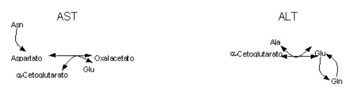

Introdução
Os aminoácidos fazedores de proteínas são continuamente trabalhados pelas células para a produção de uma série de compostos úteis à mesma, como adrenalina e noradrenalina, ou para a produção de novas proteínas. Isso acontece durante o metabolismo normal das células, que nunca armazenam o nitrogênio dos aminoácidos, como o fazem com os carbonos da glicose, pois o excesso de nitrogênio é danoso para os tecidos. Sendo assim, após uma refeição rica em aminoácidos e proteínas, como um suculento bife à parmegiana acompanhado de um vitaminado de frutas, passa a ocorrer um intenso trabalho de enzimas específicas, no sentido de quebrar as proteínas da dieta para liberar aminoácidos.
Isto se inicia no estômago, onde o pH é ácido e ajuda a amolecer essas proteínas. No estômago também há a ação de uma enzima que inicia a quebra das proteínas ingeridas.
O resultado é uma mistura de proteínas quebradas, denominadas de polipeptídios. Quando esses fragmentos de proteínas chegam ao intestino, sofrem mais quebradeira, desta vez por um outro conjunto de enzimas, secretado pelo pâncreas, originando fragmentos menores, os oligopeptídios. Lembrar que coisa parecida acontece com carboidratos e com nucleotídios. Os poli sempre viram oligo, que depois viram mono, em uma sequência de quebra-quebra que vai diminuindo o tamanho da molécula.
Finalmente, as células do epitélio intestinal absorvem os aminoácidos, que vão para o fígado e outros tecidos para serem devidamente metabolizados. E não pense que o quebra-quebra termina por aí, não. Nos tecidos, existem duas enzimas bandidas, que roubam dos ricos para dar aos pobres. Na verdade, elas furtam os grupos amina (NH2) de alguns aminoácidos abastados para doá-los a compostos pobres em aminas, transformando esses menos favorecidos em aminoácidos. Fazem isso através de um processo denominado transaminação. Posteriormente, outra enzima capta as aminas de qualquer aminoácido, mas não doa a ninguém. Simplesmente introduz essas aminas no metabolismo, na forma de amônia.
Detalhes
O nitrogênio não é armazenado no organismo, o que faz com que seu excesso seja imediatamente eliminado do mesmo. Esta eliminação envolve o metabolismo de aminoácidos, fundamental para a produção de precursores protéicos (síntese), fornecimento de nitrogênio (degradação), e síntese de metabólitos aminados (nucleotídios, creatina, histamina, melanina). É dividido em duas grandes etapas, quais sejam, o metabolismo da parte aminada e do esqueleto carbônico dos aminoácidos. Assim, a amônia liberada de um aminoácido pode ser excretada, convertida em uréia (maior parte), ou aproveitada para a síntese de outro aminoácido, ao passo que seu esqueleto carbônico pode ser utilizado para a produção de glicose, ou para o metabolismo intermediário.
Cerca de 75 % dos aminoácidos de proteínas corporais são reaproveitados em novas sínteses protéicas, ao passo que o restante é utilizado na produção de energia, ou de compostos nitrogenados especiais, tais como dopamina, colina ou epinefrina. O sinal metabólico para degradação protéica pode vir de sua modificação química por oxidação, por marcação bioquímica pela ligação à proteína ubiquitina (não confundir com ubiquinona da cadeia respiratória), ou por altos teores de sequências PEST protéicas, formadas por Pro, Glu, Ser e Thr.
Proteínas da dieta passam por uma desnaturação parcial e hidrólise inicial no estômago, respectivamente produzidos pelo baixo pH e pela atuação da pepsina, liberando aminoácidos e polipeptídios. Esses últimos vão então sofrendo ação de tripsina e quimotripsina pancreáticas, liberando mais aminoácidos e oligopeptídios, os quais são finalmente degradados por aminopeptidades, com os aminoácidos livres sendo absorvidos no lúmen intestinal.
Os estímulos hormonais vêm da colecistocinina estomacal (CCK ou pancreozimina), para o fornecimento de bile da vesícula, redução da motilidade gástrica, e para a liberação e ativação de zimógenos pancreáticos, e de secretina pancreática, para a produção de bicarbonato de sódio, o qual visa a neutralizar o pH ácido para ações enzimáticas (o zimógeno é a forma inativa de enzimas digestivas, sendo ativado por enteropeptidases e por tripsina). Os aminoácidos livres podem agora ser absorvidos pelas células epiteliais do intestino, para metabolização hepática via sistema portal.
Existem 7 sistemas transportadores de aminoácidos, que agem com consumo de ATP, necessário já que atuam contra o gradiente de concentração da célula, bem mais rica em aminoácidos que o conteúdo extracelular. O primeiro passo no catabolismo de aminoácidos envolve a remoção do grupo \(\alpha\)-amino. A lógica da via integra transaminação mitocondrial reversível (transferência de NH3 entre aminoácidos) e desaminação citosólica (liberação de NH3). A primeira, que ocorre na mitocôndria, é conduzida essencialmente pela ALT (alanina aminotransferase, antiga TGP, transaminase glutâmico-pirúvica,) e AST (aspartato aminotransferase, antiga TGO, transaminase glutâmico-oxalacética).
 | Assim, a ALT combina-se a uma Ala, associa-se a um \(\alpha\)-cetoglutarato, e libera um Glu mais um piruvato. A AST, por sua vez, combina-se a um Glu, associa-se a um \(\alpha\)-cetoglutarato, e libera um Asp mais um oxalacetato. A AST requer vitamina B6, piridoxal-P, como coenzima, a qual pode ser encontrada em quase todo alimento, como trigo, milho, gema de ovo, fígado, carne, batata, vegetais verdes e frutas cítricas. ALT e AST possuem valor diagnóstico, já que um aumento destas no plasma indicam lesão de células ricas nessas enzimas, como fígado (necrose celular extensiva e hepatite viral, coração (infarto do miocárdio) e músculo. A transaminação só não ocorre com Lys.
À transaminação segue-se a desaminação oxidativa, realizada essencialmente pela glutamato desidrogenase de fígado e rins, a qual retira o grupo \(\alpha\)-amino do Glu, convertendo-o a \(\alpha\)-cetoglutarato. A Glu desidrogenase, uma “enzima da fome”, e possui a característica singular de poder utilizar NAD+ ou NADP+ como coenzima. O equilíbrio de desaminações depende de teores de Glu, \(\alpha\)-cetoglutarato, NH4+, NAD+, NADP+, ATP (inibidor alostérico da Glu desidrogenase), e vitamina B6. Alguns D-aminoácidos de plantas e microorganismos também podem ser metabolizados pela D-aminoácido oxidase hepática.
A segunda grande etapa do metabolismo de aminoácidos envolve o catabolismo dos esqueletos de carbono, o qual origina 7 produtos principais: oxalacetato (Asn), \(\alpha\)-cetoglutarato (Gln, Pro, Arg, His), piruvato (Ala, Ser, Gly, Cys, Thr), fumarato (Phe, Tyr), succinil CoA (Met), acetil CoA e acetoacetil CoA (Leu, Ile, Lys, Trp). Os dois últimos produtos podem originar gorduras, sendo os seus aminoácidos precursores denominados de cetogênicos (Leu e Lys exclusivos).
No catabolismo de aminoácidos colaboram algumas coenzimas especiais, como SAM (S-AdenosilMetionina), transportadora de grupos CH3, THF (TetraHidroFolato), transportador de unidades de carbono contendo a vitamina ácido fólico (cereais, fígado, vegetais verdes, feijão), biotina, vitamina transportadora de CO2, vitaminas B1 (tiamina) e B12 (cianocobalamina), esta última produzida somente por microorganismos.
Na biossíntese de aminoácidos participam também 7 famílias, a saber, a do glutamato (Gln, Pro, Arg), aspartato (Asn, Met, Thr -> Ile, Lys), piruvato (Val, Ala, Leu), serina (Cys, Gly), vinda do 3-fosfoglicerato da glicólise, e aromáticos (Phe -> Tyr, Trp), e histidina (His).
Cys vem da condensação de Ser e de homocisteína (derivado de SAM), a qual é originada a partir de Met, um aminoácido essencial, razão pela qual a síntese de Cys somente é mantida com dieta adequada de Met. Biossíntese de Tyr envolve uma coenzima especial, o BH4, tetraidrobiopterina.
Aplicação
Durante o jejum e cetose, ocorre grande desaminação de glutamina, afim de permitir uma neutralização da acidez resultante, através da liberação de NH4+. Nestes quadros, também ocorre uma alta liberação de alanina e glutamina muscular para os rins, juntamente com atividade aumentada do ciclo de Cori (conversão de lactato em glicose).
Em vegetais, a síntese de aminoácidos se inicia pela absorção radicular de amônia, a qual é convertida em glutamato e aspartato, ambos transportados pela planta em sua forma amídica, glutamina e asparagina. Aminoácidos livres e polipeptídios são liberados em sementes para o desenvolvimento da plântula, por atuação de proteinases vegetais (papaína, bromelaina).
Metabolismo protéico em peixes.
Diferentemente de outros animais, o peixe possui reduzida capacidade de utilização de carboidratos, o que faz destes animais eficientes aproveitadores de proteínas como fonte de energia, além de tornar elevada as exigências nutricionais desses compostos (proteínas e aminoácidos). De um modo geral, os músculos de peixes tem teores de proteínas miofibrilares maiores que os de bovino, frango e coelho, enquanto o estroma é cinco vez menor nesse quesito em relação ao de bovinos. Espécies marinhas de carne branca possuem proteínas miofribrilares em torno de 75 % (atuns e bonitos como líderes), e sarcoplasmáticas em torno de 20 %. Em termos protéicos, 100 g de carne de peixe fornecem aproximadamente a mesma quantidade que a carne de mamíferos e aves. Porém, as proteínas de peixes apresentam uma digestibilidade de 90 a 100 %, valores que são ligeiramente superiores que os da carne bovina e de aves.
A digestão química de peixes se inicia no estômago, já que são desprovidos de atividade enzimática na boca e faringe, com suco gástrico estimulado por histamina. A transaminação protéica nestes animais ocorre no cérebro, coração, rins e fígado. A desaminação, contudo, ocorre no fígado, rins e brânquias, tornando o primeiro não essencial no processo. Em peixes existem quatro formas de desaminação distintas, uma convencional, uma desaminação direta de histidina, formando uricanato e amônio, uma desaminação por desidratação de serina e treonina, e uma desaminação hidrolítica de asparagina e glutamina.
Peixes apresentam maior habilidade em utilizar a proteína como fonte energética que animais terrestres, já que ambientes aquáticos são escassos em carboidratos. Dentre as modificações necessárias para esta adaptação, a excreção de nitrogênio na forma menos consumidora de energia, a amônia, e um papel secundário para a insulina, mais voltado ao metabolismo protéico que ao de carboidratos. No entanto, sob jejum, os peixes ativam a rota de re-síntese hepática de glicose (gliconeogênese) utilizando alanina, glicina e histidina como precursores.
Na excreção de nitrogênio, peixes de água doce o fazem através de amônia, enquanto que peixes marinhos, como peixes cartilaginosos, através da produção de uréia. Em teleósteos adultos de água doce, 60 a 90 % da excreção total de nitrogênio é realizada por amônia, com rotas de excreção pelos rins e brânquias.
Os mecanismos de excreção branquial de amônia ainda são controvertidos, mas admite-se que ao menos quatro sistemas são efetivos: a difusão da amônia ao longo do gradiente de pressão parcial da mesma, a difusão de amônio do sangue para a água através de um gradiente eletro-químico, a troca catiônica H+ / NH4+ das células epiteliais da membrana apical (próton pra dentro, amônio para fora), e a troca catiônica Na+ / NH4+ (sódio pra dentro, amônio pra fora) por via similar. Os dois primeiros processos são mais proeminentes.
Síntese
- Importância: produção de precursores protéicos (síntese), fornecimento de nitrogênio (degradação) e síntese de metabólitos aminados (histamina, melanina); 1. localização: citosol;
- Lógica da via: transaminação (ALT, Ala aminotransferase; AST, Asp aminotransferase) e desaminação (Glu desidrogenase);
- Vitaminas: niacina, vit B6, ácido fólico;
- Excreção de nitrogênio: aves, lagartos e serpentes (animais uricotélicos); mamíferos (ureotélicos); peixes (amonotélicos);
- Doenças: homocistinúria (def. cistationina sintetase, retardo mental); albinismo (def. fenilalanina hidroxilase, hipopigmentação); fenilcetonúria (def. fenilalanina hidroxilase, mortal); doença do xarope de bordo (def. desidrogenase de aminoácidos de cadeia ramificada, mortal); alcaptonúria (def. homogentisato oxidase, benigna);
- Conversão de produtos especializados: porfirinas (porfobilinogênio -> uroporfirinogênio -> protoporfirina IX -> heme), bilirrubina (biliverdina -> bilirrubina), creatina (Arg+Gly), histamina (descarboxilação de His), serotonina (Trp), catecolaminas (Tyr), melanina (Tyr)
- Doença: porfirias (def. síntese de heme) e icterícia (deposição de bilirrubina).